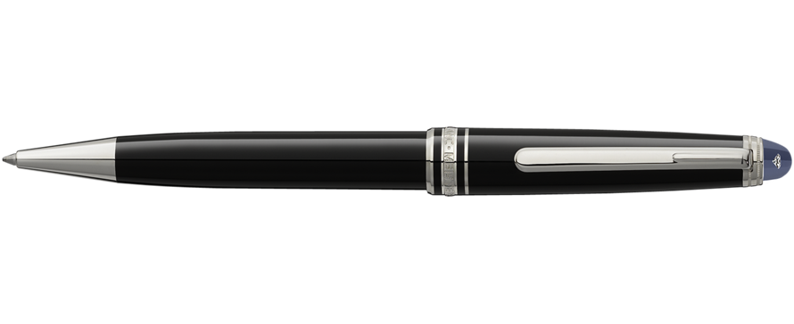

Ручка (pen)

Цена: 5.1
Ручка — письменная принадлежность, с помощью которой можно оставить чернильный след на поверхности (обычно на бумаге). Различают следующие типы ручек:
- перьевые ручки
- шариковые ручки
- капиллярные ручки
- фломастеры
- гелевые ручки или ручки-роллеры
- ручки с биополимерными чернилами
В шариковых и гелевых ручках иногда используются «стираемые» чернила.